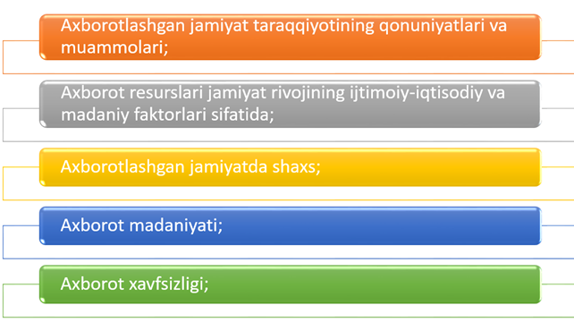
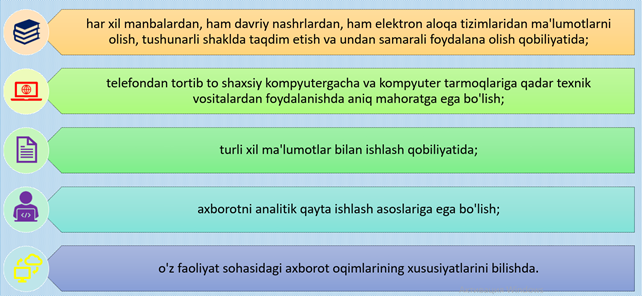

KIBERXAVFSIZLIKNING IJTIMOIY VA ETIK JIHATLARI.
REJA:
Hozirgi kunda axborot va kompyuter texnologiyalari iboralari kundalik turmushda eng ko’p qo’llaniladigan tushunchalar desak mubolag’a bo’lmaydi. Chunki hayotning qaysi sohasini olmaylik, qanday amallarni bajarmaylik, albatta, axborotlar bilan ish ko’ramiz. Ya’ni axborotlardan foydalanish, axborot almashish, ularni uzatish, o’zlashtirish inson faoliyatining asosiy negizini tashkil etadi.
“Axborotlashtirish to’g’risida”gi qonun.
"Axborotlashtirish" atamasi mahalliy ilmiy adabiyotlarda 80-yillarning boshlarida paydo bo'ldi. XX asr. Jamiyatda ijtimoiy ehtiyojning paydo bo'lishi bilan bog'liq ravishda har xil turdagi ijtimoiy ahamiyatga ega bo'lgan ma'lumotlarni shakllantirish, saqlash va ulardan foydalanish uchun informatikadan yanada keng foydalanishga bo'lgan ehtiyoj.
O’zbekiston Respublikasida qabul qilingan “axborotlashtirish to’g’risida”gi 11.12.2003 560-II sonli qonunda “axborotlashtirish” atamasiga quyidagicha ta’rif berilgan:
Axborotlashtirish — yuridik va jismoniy shaxslarning axborotga bo‘lgan ehtiyojlarini qondirish uchun axborot resurslari, axborot texnologiyalari hamda axborot tizimlaridan foydalangan holda sharoit yaratishning tashkiliy ijtimoiy-iqtisodiy va ilmiy-texnikaviy jarayoni;
“Axborotlashtirish to’g’risida”gi qonun.
Aхборот ресурси— ахборот тизими таркибидаги електрон шаклдаги ахборот, маълумотлар банки, маълумотлар базаси;
Aхборот ресурсларининг ёки ахборот тизимларининг мулкдори — ахборот ресурсларига ёки ахборот тизимларига егалик қилувчи, улардан фойдаланувчи ва уларни тасарруф етувчи юридик ёки жисмоний шахс;
Aхборот ресурсларининг ёки ахборот тизимларининг егаси — қонун билан ёки ахборот ресурсларининг, ахборот тизимларининг мулкдори томонидан белгиланган ҳуқуқлар доирасида ахборот ресурсларига ёхуд ахборот тизимларига егалик қилувчи, улардан фойдаланувчи ва уларни тасарруф етувчи юридик ёки жисмоний шахс;
Aхборот технологияси — ахборотни тўплаш, сақлаш, излаш, унга ишлов бериш ва уни тарқатиш учун фойдаланиладиган жами услублар, қурилмалар, усуллар ва жараёнлар;
Aхборот тизими — ахборотни тўплаш, сақлаш, излаш, унга ишлов бериш ҳамда ундан фойдаланиш имконини берадиган, ташкилий жиҳатдан тартибга солинган жами ахборот ресурслари, ахборот технологиялари ва алоқа воситалари.
Axborotlashtirish subyektlari bu – O’zbekiston Respublikasi hududida faoliyatini amalga oshiradigan yoki huquqiy munosabatlarga kiruvchi davlat organlari, jismoniy va yuridik shaxslar.
Axborotlashtirish subyektlarining texnik asosini kompyuterlashtirish va aloqa tizimlarini har tomonlama rivojlantirish tashkil etadi.
Axborot etikasi
Axborot etikasi – axborot texnologiyalarini rivojlanishi va qo’llanilishi bilan bog’liq holda paydo bo’ladigan axloqiy muammolarni tadqiq qiladigan fan. Axborot etikasi kompyuter etikasi va axborot falsafasi bilan bog’liq.
Axborot axloqiy dilemmalar “axborot jamiyatida” ayniqsa muhim bo’li bormoqda. Allaqachon axborot texnologiyalari mualliflik huquqlari, intellektual erkinlik, javobgarlik va xavfsizlikni himoyasiga tegishli bo’lib, insonning fundamental huquqlarini qamrab oladi. Axborot etikasi mulk, ruxsat, shaxsiy hayot daxilsizligi, axborot umumiyligi va xavfsizligi muammolarini ko’rib chiqadi.
Axborot erkinligi
Axborot erkinligi, ya’ni so’z erkinligi yana axborotni qidirish, olish va uzatish erkinligi kibermuhitda kimda va nimada hukumat borligi masalasini ko’taradi. Axborot erkinligi huquqi odatda mamlakatga, jamiyatga yoki ma’daniyatga tegishli ta’sir qiladigan cheklanishlarga bog’liq. Internetga qo’llaniladigan bu muammoning uchta nuqtai-nazari mavjud. Birinchisi – Internet davlat aholisi foydalanishi mumkin bo’lgan OAV shakli bo’lib, har bir davlat o’zi o’zining qonunchilik asosida nazoratlashi kerak. Ikkinchisi – “Sanoat dunyosi hukumati… sizning hukumatingiz bizgacha yetib bormaydi [Internetgacha]… Bizda tanlov hukumati yo’q, bo’lmasa ham kerak… Sizda bizni boshqarish uchun axloqiy huquq yo’q, biz qo’rqishimizga asos bo’ladigan majburlash usullari ham sizda yo’q”. Uchinchi tomon Internet davlat chegarasi kabi seziladigan barcha chegaralarni o’chirib tashlaydi deb hisoblaydi, shuning uchun hukumat xalqaro organga berilishi lozim, chunki bitta davlat qonuni ikkinchisi uchun qarshi bo’lishi mumkin.
Axborot huquqi.
Axborot huquqi axborot sohasida munosabatlarni huquqiy, ya’ni fuqarolik huquqi va ma’muriy huquq sohasi ostida, hamda sohadagi ilmiy hamda o’quv fanlarini nazoratlovchi tizimdir.
Axborot huquqi ilm-fan sifatida – bu ma’muriy huquq sohasi ostida uning predmeti axboriy munosabatlarni huquqiy nazoratlash tamoyillari, usullari, uning asosiy institutlari rivojlanish tarixi, xorijiy mamlakatlar axborot sohasida ijtimoiy munosabatlar va huquqiy me’yorlarini qiyosiy-huquqiy tahlili hisoblanadigan axborot huquqi to’g’risidagi ilmiy bilimlar tizimidir. Bu fan o’zining boshlang’ich rivojlanish bosqichida.
Kompyuter etikasi kodeksi.
Kompyuter etikasini yaqqol ko’rinishi axloqiy kodekslar ishlab chiqish sohasida namoyon bo’ldi. Ko’rilayotgan muammoga sezilarli munosabat AQSH da bo’ldi, birinchi bo’lib 1974-yilda kompyuter etikasi kodeksi ishlab chiqildi. Kodeks qabul qilinishi injinerlar, olimlar va texnologlar o’zini faoliyati natijalari bilan axborot jamiyatida barcha insonlarni hayotini sifati va shartlarini belgilab berishini tushunilishi bilan aytib o’tildi. Shu sababli kodeks preambulasida axborot texnologiyalari vositalarini ishlab chiqish va joriy etilishida etikani barcha me’yorlariga roiya etilishi hayotiy muhim zaruratligi ajratib ko’rsatiladi. Natijada AQSH da axborot texnologiyalari sohasi bilan bog’liq ko’plab tashkilotlarda kodekslar ishlab chiqildi va qabul qilindi, xususan, “Kompyuter texnologiyalari ishlab chiquvchilar assotsiatsiyasi” (ACM), “Axborot texnologiyalari menejerlari assotsiatsiyasi” (DPMA), “AQSH axborot texnologiyalari foydalanvuchilari assotsiatsiyasi” (ITAA), “Sertikatlangan kompyuter professionallari assotsiatsiyasi” (ICCP).
Kompyuter etikasi kodeksi.
“Axborot texnologiyalari bo’yicha xalqaro federatsiyasi” (IFIP) kodekslarida foydalaniladigan etika standartlari asosida mahalliy madaniy va etika an’analarini hisobga olgan holda boshqa davlatni milliy tashkilotlarning kompyuter etikasi kodekslari qabul qilinishi tavsiya etildi. Alohida kodekslar tarkibi bir-biridan farq qiladi, biroq ularning asosida axloqiy o’rnatmalarning ba’zi invariant to’plamlari mavjud.
Kodekslar asosidagi axloqiy o’rnatmalarning ba’zi invariant to’plamlari sifatida quyidagilarni keltirish mumkin:
Boshqa insonlarga zarar ketirish maqsadida kompyuterdan foydalanmaslik;
Kompyuter tarmog’ni boshqa foydalanuvchilari ishiga aralashmaslik va xalaqait bermaslik;
Erkin foydalanish uchun mo’ljallanmagan fayllardan foydalanmaslik;
O’g’rilik uchun kompyuterdan foydalanmaslik;
Yo’lg’on axborot tarqatish uchun kompyuterdan foydalanmaslik;
O’g’irlangan dasturiy ta’minotlardan foydalanmaslik;
Begona intellektual mulkni o’zlashtirmaslik;
Ruxsatsiz yoki muvofiq kompensatsiyasiz kompyuter qurilmalari yoki tarmoq resurslaridan foydalanmaslik;
Yozayotgan dastur yoki ishlab chiqayotgan tizimingizni ehtimoliy ijtimoiy oqibatlari to’g’risida o’ylash;
Kompyuterdan sizni ogohligingiz va boshqalarni hurmat qilishingizni ko’rsatadigan o’zaro cheklovlar bilan kompyuterdan foydalanish.
Kompyuter etikasi doirasida ishlab chiqilgan tamoyillar.
Privacy (shaxsiy hayot siri) – insonni avtonomiya va shaxsiy hayot erkinligiga huquqi, unga hukumat organlari va boshqa insonlarni kirishidan himoyalanish huquqi;
Accuracy (aniqlik) – tizimlarni joriy qilish bo’yicha qo’llanmani aniq bajarilishi va o’z majburiyatlariga ijtimoiy-javobgarlik, va adolatli munosabat bilan axborotni qayta ishlanishi bilan bog’liq me’yorlarga amal qilinishi; Property (xususiy mulk) – xususiy mulk daxlsizligi – iqtisodiyotda mol-mulk tartibining asosi. Bu tamoyilga rioya etilishi axborotga egalik qilish huquqi va mualliflik huquqi me’yorlariga rioya etilishini anglatadi;
Zamonaviy jamiyatda axborot munosabatlarining axloqiy me’yorlarga mosligi.
Axborotlashgan jamiyat termini Yaponiyada paydo bo’ldi. Mutaxassislar ushbu termin yuqori sifatli axborot mo’l-ko’l bo’lgan va uni saqlash, taqsimlash va foydalanish uchun barcha vositalarga ega bo’lgan jamiyatni ifodalaydi deb e’tirof etadilar. Axborotlar manfaatdor kishilarga tez va oson hamda qulay shaklda etkazib beriladi.Axborot xizmatlari uchun narxlar shu darajada past bo’lishi kerakki, jamiyatning har bir a’zosi undan ehtiyojiga qarab foydalana olsin.
Yangi axborot texnologiyalarining yaratilishi va ularning jamiyat turli jabhalariga kirib borishi informatikaning yangi sohasi – ijtimoiy informatika fanining ajralib chiqishiga sabab bo’ldi. Ijtimoiy informatika quyidagi masalalarni o’rganadi:

Har qanday bozor kabi axborot bozorida ham xaridorlar va sotuvchilar mavjud bo’ladi. Axborot egalari yoki axborot ishlab chiqaruvchilarga quyidagilarni kiritish mumkin:
Berilganlar bazalarini yaratuvchi va saqlovchi markazlar;
Aloqa va telekommuniktsiya vositalari;
Maishiy xizmatlar;
Axborotlar bilan savdo qiluvchi tijorat firmalari;
Konsultativ firmalar;
Birjalar;
Jismoniy shaxslar va boshqalar.
Axborot iste’molchilari – jismoniy shaxslar, tashkilotlar, hukumat organlari va hokazo.
Axborot oqimidagi erkin yo'nalish uchun odamda umumiy madaniyat tarkibiy qismlaridan biri sifatida axborot madaniyati bo'lishi kerak. Axborot madaniyati insonning ijtimoiy tabiati bilan bog'liq. Bu insonning turli xil ijodiy qobiliyatlari mahsuli va quyidagi jihatlarda namoyon bo'ladi:

Resurs bu – qaysidir vositalarning manbasi yoki zahirasidir. Har qandar jamiyat, davlat, firma yoki jismoniy shaxs o’z hayotiy faoliyati uchun zarur bo’lgan ma’lum resurslarga ega bo’ladi. An’anaviy resurslarga xom ashyo (tabiiy) resurslar, energetik resurslar, mehnat resurslari, moliyaviy resurslar kabi material resurslar kiradi. Bularga qo’shimcha ravishda zamonaviy jamiyatning muhim resurs turi bu – axborot resurslaridir. Vaqt o’tishi bilan axborot resurslarining ahamiyati ortib boradi; buning tasdig’i sifatida zamonaviy jamiyatning hozirgi bosqichida axborot resurslari narxi material resurslaridan past bo’lmagan tovar ekanligi faktini keltirishimiz mumkin. ”Axborot resurslari” tushunchasiga turli ta’riflar berilgan bo’lib, “Axborot, axborotlashtirish va axborot xavfsizligi to’g’risidagi qonunda keltirilgan ta’rifga asosan: ”Axborot resurslari – axborot tizimlaridagi hujjatlar va hujjat massivlaridan iborat. Axborot tizimlari – kutubxonalar, arxivlar, fondlar, ma’lumotlar bazalari va boshqalardan iborat.
Nazorat savollari:
Xavfsizlikni tahlil qilishning mantiqiy-tahliliy va nazorat-tekshirish usullarini taqqoslash nima uchun kerak?
Dastur xavfsizligini tahlil qilishning mantiqiy-analitik usullari qanday amalga oshiriladi?
Xavfsizlikni baholash usullarini tasniflashning maqsadi nimadan iborat?